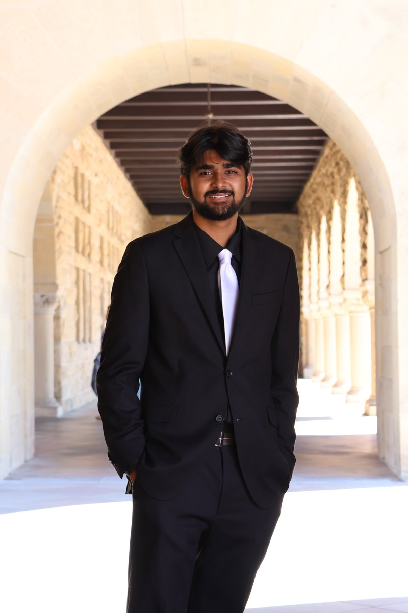
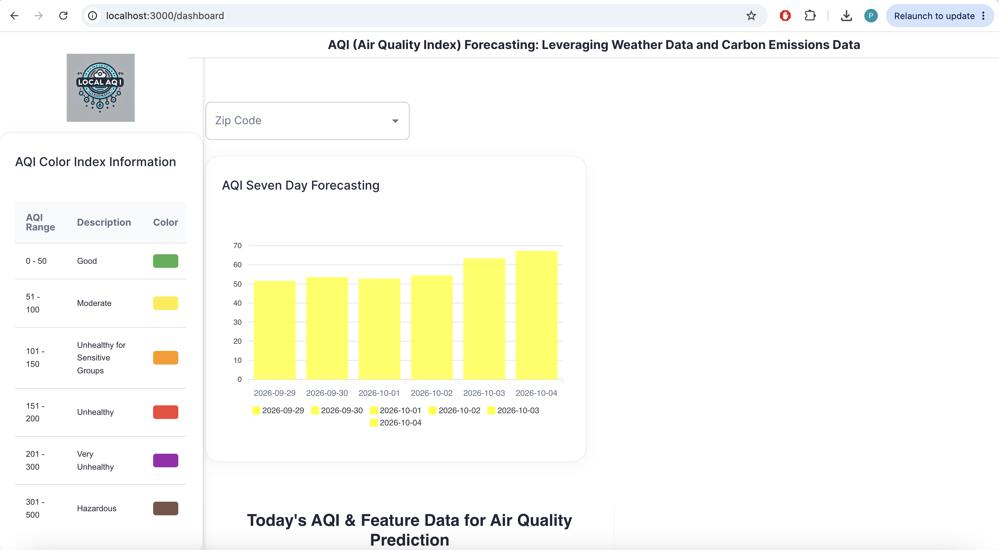
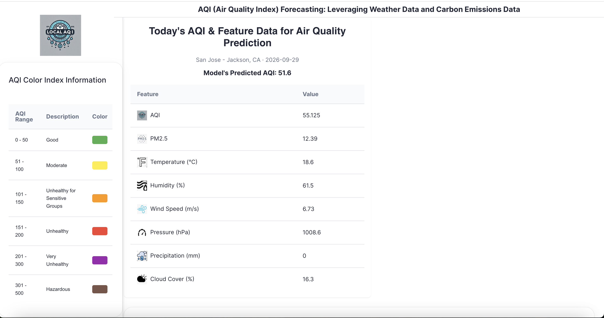
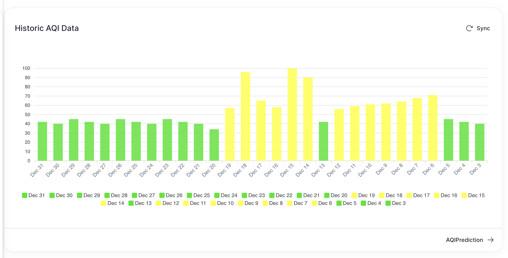
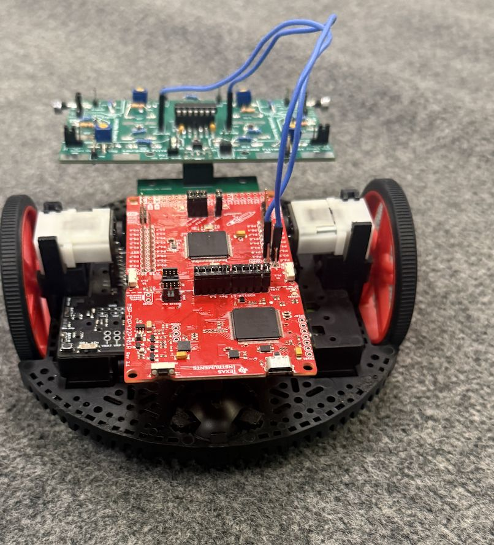
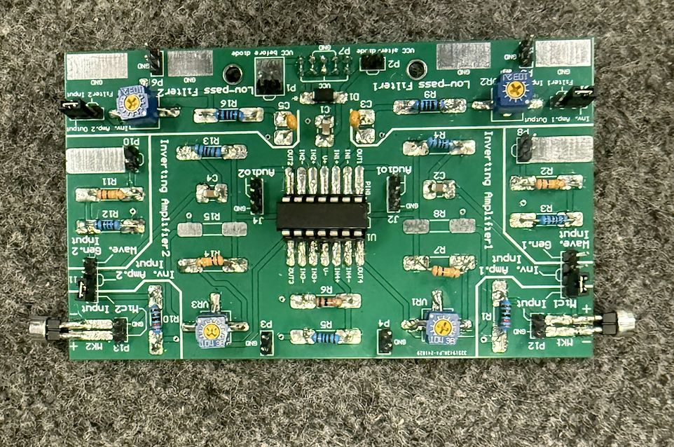
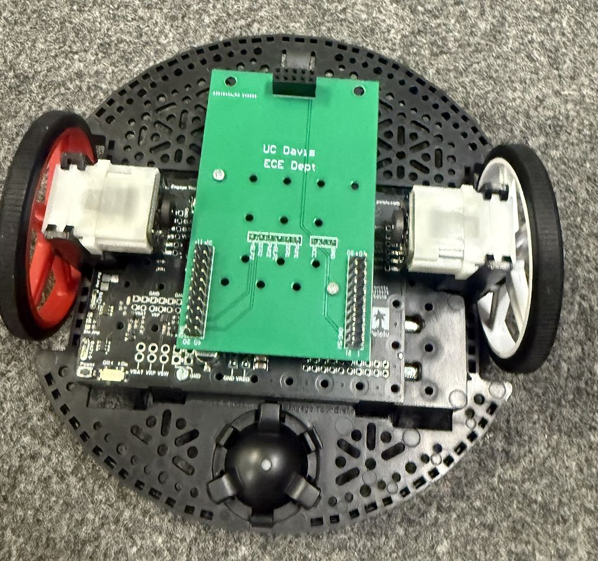
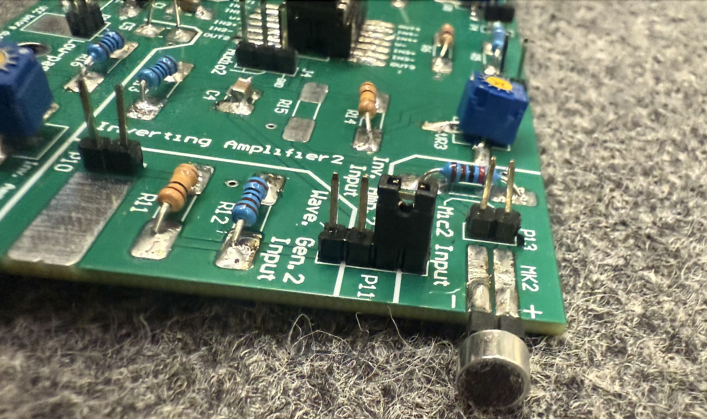
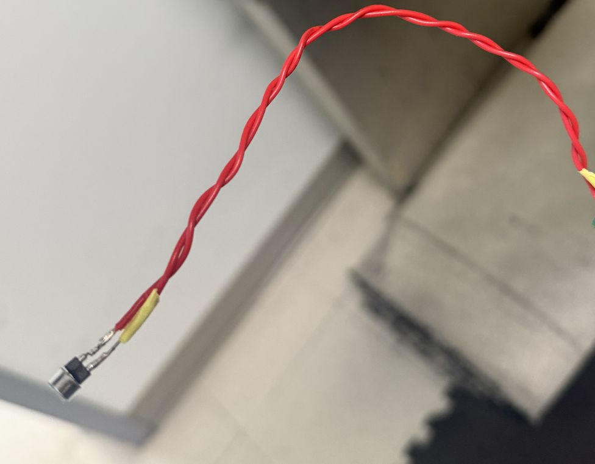

UCLA · Computer Science & Engineering
I've built sensing and prediction devices to create systems people can trust and rely on. I'm interested in system design and machine learning projects.

I'm studying Computer Science & Engineering at UCLA, out of Monta Vista High School in Cupertino. I don't pick a project because it sounds impressive. I pick it because I've felt the problem myself. I've dealt with allergies on bad air days, so I started pulling weather and emissions data to predict AQI. I've seen how hard a phone can be to use in an emergency, so I built a device that reaches help with one button. If something is going wrong for someone close to me, that's usually where my next project starts.
Outside of that, I hold a first-degree black belt in Taekwondo. I served as Director of Curriculum for my high school's Data Science Club and founded CS4Youth to teach programming to younger students. I play mridangam in a small Carnatic ensemble, where I'm listening and adjusting my rhythm mid-song as much as I'm keeping time. When I'm not building something, I'm watching basketball or football, or playing video games.
Education
Leveraging Weather Data and Carbon Emissions for Enhanced Predictions with IoT Integration. An LSTM model trained on historical weather and carbon-emissions data to forecast local Air Quality Index up to seven days out. I deployed the model behind a Flask API and built a dashboard on top of it showing live AQI, a color-coded severity legend, and a rolling forecast — screenshots below are from the dashboard running against live data.



Built during COSMOS at UC Davis: a robot that locates and drives toward the source of a sound, aimed at emergency situations where finding someone by voice or an alarm matters — a call for help, a smoke detector, a person who can't be seen but can be heard. Two microphones feed a custom PCB with inverting-amplifier and low-pass-filter stages I designed myself; the board compares the signal arriving at each mic, and a proportional turning algorithm steers the motors toward the louder side, with logic to detect and correct when the source is behind the robot.





An LSTM-based model for forecasting drought conditions from historical climate time series, applying the same sequence-modeling approach behind my AQI work to a longer-horizon environmental prediction problem.
A standalone Arduino-based device that lets an elderly user reach a pre-set emergency contact with a single action, designed for situations where reaching for a phone and navigating it isn't realistic — a fall, a medical episode, a moment of confusion. The goal was to strip the interface down to the one thing that matters in an emergency: get help, immediately, without a menu in the way.
| Year | Name | Detail |
|---|---|---|
| 2025 | Synopsys Science Fair — Winner | Smart AQI Forecasting project |
| 2025 | Synopsys ACM Award | Recognition from the ACM at Synopsys Science Fair |
| — | USACO Silver | USA Computing Olympiad, Silver division |
| — | Model UN — Commendation | Committee commendation for delegate performance |
| — | President's Volunteer Service Award — Silver | Recognized for sustained community service hours |
| — | CS4Youth — Founder & President | Founded a club teaching programming fundamentals to younger students |
| — | MV Data Science Club — Director of Curriculum | Directed the club's data science curriculum and projects at Monta Vista HS |
| — | Rosetta Cancer Research Workshop | Workshop on computational approaches to cancer research |
| — | Taekwondo — 1st Degree Black Belt | |
| — | Badminton — Junior Varsity | |
| — | Mridangam | South Indian classical percussion |
| — | R Programming — Coursera | Completed coursework in R for statistical computing |